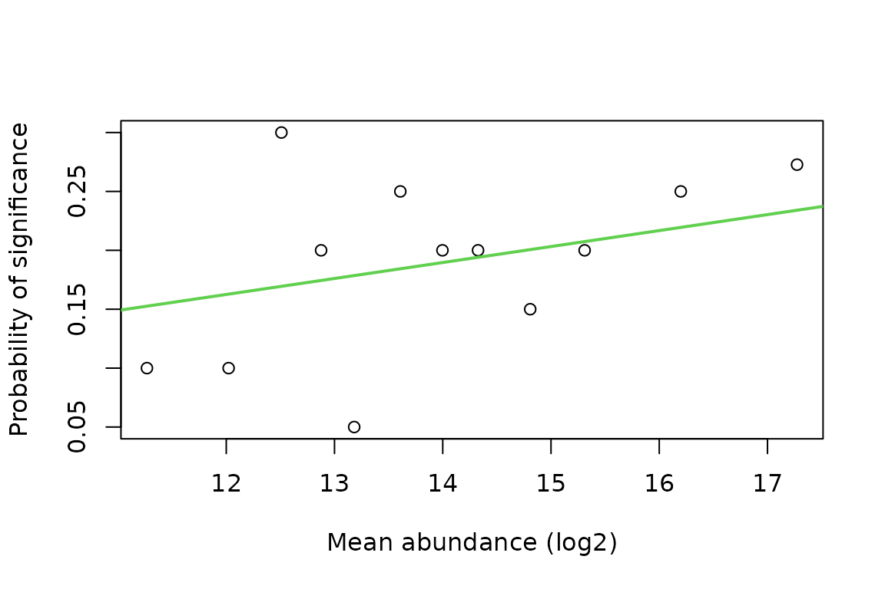
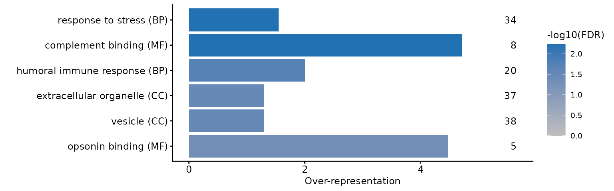
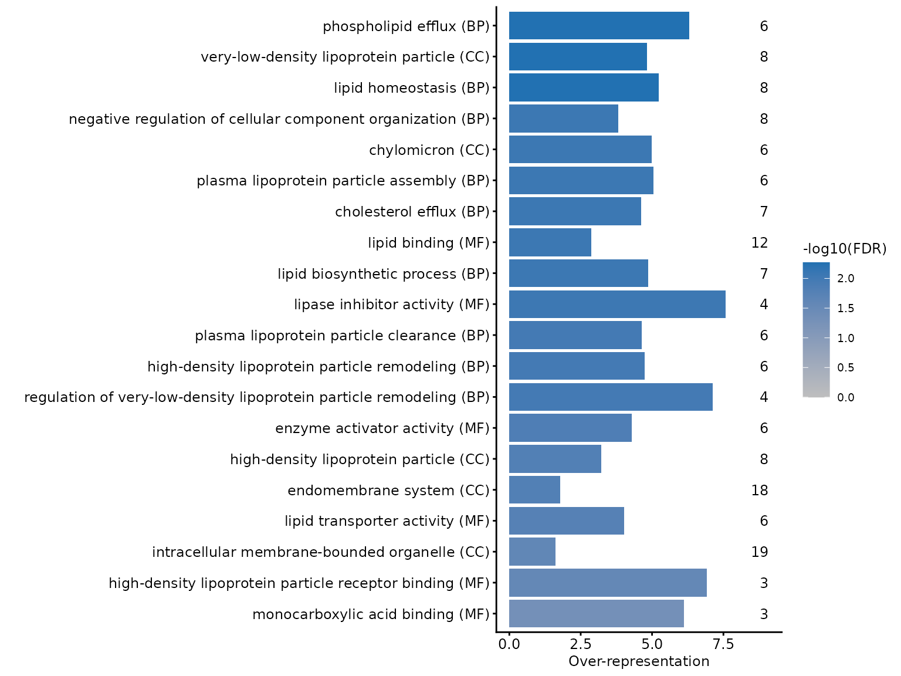
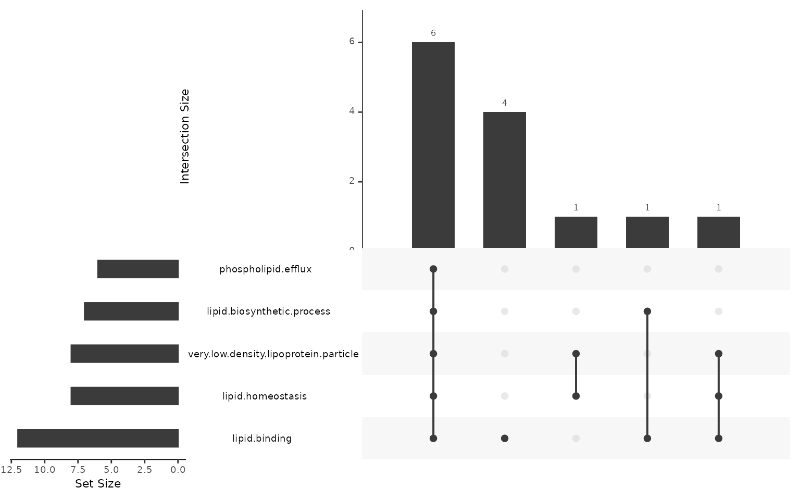

Functional enrichment analysis
Tom Smith
2026-09-11
Source:vignettes/functional_enrichment.Rmd
functional_enrichment.RmdStatistical testing gives you a list of proteins. Functional enrichment asks whether that list is structured — whether the proteins that changed share a function, a location or a complex more often than a list of that size drawn from the same experiment would.
That last clause is where most of the difficulty lies. Enrichment is a comparison between a foreground (the proteins you called changed) and a background (the proteins you could have called changed), and both are properties of your experiment rather than of biology. Get either wrong and the analysis will still run and still return small p-values; they will just be answering a question you did not ask.
Over-representation analysis (ORA) with goseq is worked
through here on the whole-proteome comparison from the testing vignette:
blood plasma from MPXV-infected individuals against healthy controls
(Wang et al. 2022). The expected answer is
known — infection should mount an acute-phase response — which makes it
possible to judge whether the analysis is behaving.
ORA is one of two standard approaches, and the choice between them is worth making deliberately rather than by default. Gene set enrichment analysis (GSEA) takes a ranking of every protein tested instead of a list of those that passed a threshold, so it is not sensitive to where that threshold sits — a difference that decides the outcome on this data, as what the foreground threshold costs shows below. ORA or GSEA? runs both on this same comparison and sets out where they agree and where they do not.
The proteins to test
The input comes from repeating the testing vignette’s analysis: restrict to the two groups of interest, keep the proteins with at least 2 quantified values in both conditions, and fit the model.
dia_prot <- dia_qf[, colData(dia_qf)$group %in% c('control', 'MPXV')]
group <- factor(dia_prot[['protein']]$group, levels = c('control', 'MPXV'))
n_quant <- sapply(levels(group), function(g){
rowSums(!is.na(assay(dia_prot[['protein']])[, group == g, drop = FALSE]))
})
testable <- rownames(n_quant)[apply(n_quant, 1, min) >= 2]
fit <- lmFit(assay(dia_prot[['protein']])[testable, ], model.matrix(~group))
limma_results <- eBayes(fit, trend = TRUE, robust = TRUE) %>%
topTable(coef = 'groupMPXV', number = Inf) %>%
tibble::rownames_to_column('Protein')Changed proteins are defined by significance alone, without the
treat fold-change threshold used in the testing vignette.
The threshold there guards against calling small changes interesting;
here it would shrink the foreground, and the power of every enrichment
test that follows depends on the foreground size. What that choice costs
is measured at the end.
Increased and decreased proteins are tested separately. A term that is over-represented among increased proteins and among decreased proteins is not over-represented among changed proteins as a group — pooling the two directions lets opposite biology cancel, which for this dataset would mix the acute-phase response with the lipoprotein depletion it drives.
bias <- setNames(limma_results$AveExpr, limma_results$Protein)
sig_up <- setNames(limma_results$adj.P.Val < 0.05 & limma_results$logFC > 0,
limma_results$Protein)
sig_dw <- setNames(limma_results$adj.P.Val < 0.05 & limma_results$logFC < 0,
limma_results$Protein)
c(tested = length(bias), increased = sum(sig_up), decreased = sum(sig_dw))
#> tested increased decreased
#> 231 43 27Note what the background is here: the 231 proteins that were actually tested, not the human proteome and not even everything identified in the experiment. A plasma proteome is a heavily biased sample of the proteome to begin with, so testing against all of UniProt would return “secreted”, “extracellular region” and every related term for any foreground at all, telling you only that you ran a plasma experiment. The proteins that could have been called changed are the right comparison, which is why the background is derived from the results table rather than supplied separately.
GO annotations
get_go_terms() retrieves the GO terms UniProt annotates
to each accession. expand_terms = TRUE also adds every
ancestor term, so that a protein annotated to
phospholipid efflux also counts towards
lipid transport and transport. Enrichment
tools that treat GO terms as flat, unrelated categories —
goseq among them — need this expansion, or a general term
will only ever be tested against the proteins annotated to it directly,
which is usually very few.
go_res_all <- get_go_terms(rownames(dia_qf[['protein']]), expand_terms = TRUE)Expansion is slow and the query needs UniProt to be reachable, so a
stored copy of the result is read instead.
data-raw/record_go_enrichment_cache.R regenerates it, and
release records the UniProt release it was built from.
go_enrichment_cache <- readRDS(system.file(
'extdata', 'go_enrichment_cache.rds', package = 'biomasslmb'))
go_enrichment_cache$release
#> [1] "2026_02"
go_res_all <- go_enrichment_cache$go_res_all
head(go_res_all)
#> UNIPROTKB GO.ID TERM ONTOLOGY
#> 1 P02786 GO:0000018 regulation of DNA recombination BP
#> 2 P02787 GO:0000041 transition metal ion transport BP
#> 3 P02786 GO:0000041 transition metal ion transport BP
#> 4 P02790 GO:0000041 transition metal ion transport BP
#> 5 Q562R1 GO:0000123 histone acetyltransferase complex CC
#> 6 O00391 GO:0000139 Golgi membrane CCgoseq needs the mapping as two columns, feature and
category.
gene2cat <- go_res_all[, c('UNIPROTKB', 'GO.ID')]Abundance bias
Abundant proteins are quantified more precisely and in more samples, so they are more likely to reach significance for a change of a given size. Abundance is also not spread evenly across GO terms. Together those two facts mean a plain hypergeometric test will report terms rich in abundant proteins as enriched whether or not anything happened to them.
nullp() fits the relationship between the bias and the
probability of being called significant, producing a probability
weighting function (PWF). The bias here is mean log2 abundance across
samples — AveExpr, already in the limma
output. (For RNA-seq, which goseq was written for, the
equivalent bias is transcript length.)
set.seed(0)
pwf_up <- nullp(sig_up, bias.data = bias, plot.fit = FALSE)
plotPWF(pwf_up, binsize = 20,
xlab = 'Mean abundance (log2)', ylab = 'Probability of significance')
Each point is a bin of 20 proteins ordered by abundance, and the line is the fitted PWF. The trend is upward but shallow: the most abundant proteins are 1.7 times as likely to be called significant as the least abundant. Worth looking at rather than assuming — a flat PWF means the correction will change nothing, and a steep one means an uncorrected analysis would have been badly misleading.
Over-representation testing
get_enriched_go() wraps goseq(), adding
BH-adjusted p-values for over- and under-representation and a truncated
term_short column for plotting. The Wallenius
method is what applies the PWF: it treats the foreground as drawn from a
biased urn, where each protein’s chance of selection is its PWF value.
Passing method = 'Hypergeometric' instead runs the standard
unweighted test and ignores the PWF entirely, so the bias correction is
a property of the method, not of having fitted a PWF.
ora_up <- get_enriched_go(pwf_up, gene2cat = gene2cat, method = 'Wallenius')
nrow(ora_up)
#> [1] 1009Effect size
A p-value says a term is more represented than expected; it does not
say by how much, and with a large background a term can be highly
significant while barely enriched. estimate_overrep() adds
two effect sizes: overrep, the ratio of the term’s
foreground rate to the overall foreground rate, and
adj_overrep, the same ratio after dividing out the PWF
weight of the term’s proteins. Use adj_overrep alongside a
Wallenius p-value, so that both the test and the effect
size account for the bias.
ora_up <- estimate_overrep(ora_up, pwf_up, gene2cat)Independent filtering
Most GO terms cannot be informative in a given experiment: a term
with 2 background proteins cannot survive correction across a thousand
others even if both are in the foreground, and a term covering most of
the background cannot be specific to anything. Both nonetheless add to
the multiple-testing burden.
add_independent_filtering_padj() applies the principle
DESeq2 uses for low-count genes — chooses a minimum term size that
maximises the number of rejections, then re-adjusts p-values over only
the terms that pass. This is valid because term size is independent of
the p-value under the null but not under the alternative.
ora_up <- ora_up %>%
add_independent_filtering_padj(plot = FALSE) %>%
mutate(over_represented_adj_pval = padj_if)
sum(ora_up$over_represented_adj_pval < 0.05, na.rm = TRUE)
#> [1] 18Setting plot = TRUE draws the number of rejections
against the filtering threshold, which is worth looking at if the chosen
threshold seems surprising.
Redundant terms
The GO hierarchy guarantees that a real signal shows up as many terms
at once: if high-density lipoprotein particle is
over-represented then so are its parents, and each is reported as a
separate finding. remove_redundant_go() walks the hierarchy
and keeps, from each branch, only the most significant term.
ora_up_flt <- ora_up %>%
filter(over_represented_adj_pval < 0.05) %>%
remove_redundant_go()
nrow(ora_up_flt)
#> [1] 6Note the order: filter to significant terms first, then de-duplicate. Running it over every tested term would spend a lot of time collapsing branches that were never significant, and could keep a non-significant term as the representative of its branch.
The decreased proteins
The same steps for the other direction.
pwf_dw <- nullp(sig_dw, bias.data = bias, plot.fit = FALSE)
ora_dw_flt <- get_enriched_go(pwf_dw, gene2cat = gene2cat, method = 'Wallenius') %>%
estimate_overrep(pwf_dw, gene2cat) %>%
add_independent_filtering_padj(plot = FALSE) %>%
mutate(over_represented_adj_pval = padj_if) %>%
filter(over_represented_adj_pval < 0.05) %>%
remove_redundant_go()
nrow(ora_dw_flt)
#> [1] 20Plotting the results
plot_go() plots over-representation on the x-axis,
shades by adjusted p-value and annotates each bar with the number of
foreground proteins carrying the term. Both are needed to read the
result: a large over-representation resting on 4 proteins is a different
claim from a small one resting on 40.
By default the axis labels come from term_short, the
30-character truncation get_enriched_go() adds. GO terms
that share a prefix collide once truncated, so the labels below use the
full term.
The increased proteins:
plot_go(ora_up_flt, term_col = 'term') +
theme_biomasslmb(base_size = 9, border = FALSE, aspect_square = FALSE)
They are enriched for complement and humoral immune terms —
complement binding covers 8 of the 9 background proteins
annotated to it — which is the acute-phase response the design was
expected to show.
The decreased proteins:
plot_go(ora_dw_flt, term_col = 'term') +
theme_biomasslmb(base_size = 9, border = FALSE, aspect_square = FALSE)
They are enriched for lipoprotein particles and lipid transport, driven by the apolipoproteins. This is the other half of the same biology: the negative acute-phase reactants.
Which proteins drive a term?
Related GO terms are annotated to overlapping sets of proteins, so a
column of significant terms can be one finding reported repeatedly
rather than several independent ones. remove_redundant_go()
addresses this through the hierarchy, but terms that overlap heavily
without being ancestors of each other survive it.
plot_go_terms_upset() shows the overlap directly, at the
level of the proteins.
plot_go_terms_upset(
goi = head(ora_dw_flt$term, 5),
foi = names(sig_dw)[sig_dw],
gene2cat = go_res_all)
Most of the five terms are carried by the same small core of proteins. That does not make the enrichment wrong, but it does mean the five terms are close to one finding, and a summary reporting them as five separate results would overstate the evidence.
What the foreground threshold costs
ORA needs a cut-off to define the foreground, and the result depends
on where it is put. Below, the same analysis with the foreground from
treat at a 1.2-fold threshold — the definition the testing
vignette used.
treat_results <- treat(fit, fc = 1.2, trend = TRUE, robust = TRUE) %>%
topTreat(coef = 'groupMPXV', number = Inf) %>%
tibble::rownames_to_column('Protein')
sig_up_treat <- setNames(treat_results$adj.P.Val < 0.05 & treat_results$logFC > 0,
treat_results$Protein)
bias_treat <- setNames(treat_results$AveExpr, treat_results$Protein)
ora_up_treat <- nullp(sig_up_treat, bias.data = bias_treat, plot.fit = FALSE) %>%
get_enriched_go(gene2cat = gene2cat, method = 'Wallenius') %>%
add_independent_filtering_padj(plot = FALSE)
c(foreground = sum(sig_up_treat),
significant_terms = sum(ora_up_treat$padj_if < 0.05, na.rm = TRUE))
#> foreground significant_terms
#> 14 0
ora_up_treat %>%
arrange(over_represented_pvalue) %>%
select(term_short, numDEInCat, numInCat, over_represented_pvalue, padj_if) %>%
head(4) %>%
knitr::kable(digits = c(NA, 0, 0, 4, 3))| term_short | numDEInCat | numInCat | over_represented_pvalue | padj_if |
|---|---|---|---|---|
| acute-phase response | 4 | 16 | 0.0124 | 0.668 |
| acute inflammatory response | 4 | 19 | 0.0235 | 0.668 |
| response to stress | 11 | 112 | 0.0237 | 0.668 |
| complement activation, alterna | 3 | 12 | 0.0273 | 0.668 |
The ranking is unchanged — acute-phase response is still
the most over-represented term, on 4 of its 16 background proteins — but
with 14 foreground proteins instead of 43, nothing survives
multiple-testing correction across 675 terms. The biology did not
change; the power did.
This is the general shape of the problem, and it cuts both ways: a permissive threshold gives power but admits noise into the foreground, and a strict one gives a foreground you trust and no power to use it. Report the threshold you used, and treat a result that appears or disappears when you move it as a weak result either way.
This is also the case for running GSEA alongside ORA rather than choosing once and for all. Ranking every tested protein removes the dependence on the cut-off entirely, at the price of a dependence on the ranking statistic instead. ORA or GSEA? runs both on this data and compares what each finds.
Summary
This vignette has:
- Defined a foreground and a background from the same testing results, so that enrichment is measured against the proteins that could have been called changed rather than against the proteome
- Retrieved GO annotations with
get_go_terms(expand_terms = TRUE), expanding to ancestor terms becausegoseqtreats categories as flat - Fitted a probability weighting function with
nullp()on mean protein abundance, and usedmethod = 'Wallenius'so that the enrichment test actually applies it - Tested each direction separately with
get_enriched_go(), added an effect size withestimate_overrep(), reduced the multiple-testing burden withadd_independent_filtering_padj()and collapsed hierarchy-redundant terms withremove_redundant_go() - Plotted the surviving terms with
plot_go()and checked, withplot_go_terms_upset(), how far they rest on the same proteins - Shown that the foreground threshold, not the biology, decided whether the increased proteins yielded a significant term at all
Where to go next
- ORA or GSEA? runs gene set enrichment analysis on this same data and compares it with the analysis above. GSEA ranks every tested protein by a signed statistic rather than thresholding, so it removes the sensitivity demonstrated in the last section, and it is worth running alongside ORA when the foreground is small.
- Data exploration and statistical testing covers where the foreground came from, including the testability filter that decided which proteins entered the background.
-
Protein annotation covers
get_go_terms()and the rest of the UniProt annotation retrieval in more detail, including what happens to accessions that no longer map.
Getting help
If your experiment does not fit what this article assumes, or a result looks wrong, please get in touch with Tom Smith (tsmith@mrclmb.ac.uk) rather than guessing — it is far easier to help while an analysis is in progress than to unpick a decision afterwards, and easier still before the samples are run. Getting started sets out which article applies to which experiment.
sessionInfo()
#> R version 4.5.3 (2026-03-11)
#> Platform: x86_64-pc-linux-gnu
#> Running under: Ubuntu 24.04.5 LTS
#>
#> Matrix products: default
#> BLAS: /usr/lib/x86_64-linux-gnu/openblas-pthread/libblas.so.3
#> LAPACK: /usr/lib/x86_64-linux-gnu/openblas-pthread/libopenblasp-r0.3.26.so; LAPACK version 3.12.0
#>
#> locale:
#> [1] LC_CTYPE=C.UTF-8 LC_NUMERIC=C LC_TIME=C.UTF-8
#> [4] LC_COLLATE=C.UTF-8 LC_MONETARY=C.UTF-8 LC_MESSAGES=C.UTF-8
#> [7] LC_PAPER=C.UTF-8 LC_NAME=C LC_ADDRESS=C
#> [10] LC_TELEPHONE=C LC_MEASUREMENT=C.UTF-8 LC_IDENTIFICATION=C
#>
#> time zone: UTC
#> tzcode source: system (glibc)
#>
#> attached base packages:
#> [1] stats4 stats graphics grDevices utils datasets methods
#> [8] base
#>
#> other attached packages:
#> [1] goseq_1.62.0 geneLenDataBase_1.46.0
#> [3] BiasedUrn_2.0.12 limma_3.66.0
#> [5] dplyr_1.2.1 ggplot2_4.0.3
#> [7] biomasslmb_0.1.0 QFeatures_1.20.0
#> [9] MultiAssayExperiment_1.36.2 SummarizedExperiment_1.40.0
#> [11] Biobase_2.70.0 GenomicRanges_1.62.1
#> [13] Seqinfo_1.0.0 IRanges_2.44.0
#> [15] S4Vectors_0.48.1 BiocGenerics_0.56.0
#> [17] generics_0.1.4 MatrixGenerics_1.22.0
#> [19] matrixStats_1.5.0
#>
#> loaded via a namespace (and not attached):
#> [1] naniar_1.1.0 RColorBrewer_1.1-3 jsonlite_2.0.0
#> [4] magrittr_2.0.5 GenomicFeatures_1.62.0 farver_2.1.2
#> [7] corrplot_0.95 rmarkdown_2.32 fs_2.1.0
#> [10] BiocIO_1.20.0 ragg_1.5.2 vctrs_0.7.3
#> [13] memoise_2.0.1 Rsamtools_2.26.0 RCurl_1.98-1.20
#> [16] htmltools_0.5.9 S4Arrays_1.10.1 BiocBaseUtils_1.12.0
#> [19] progress_1.2.3 curl_8.0.0 SparseArray_1.10.10
#> [22] sass_0.4.10 uniprotREST_1.0.0 bslib_0.12.0
#> [25] htmlwidgets_1.6.4 desc_1.4.3 plyr_1.8.9
#> [28] httr2_1.3.0 cachem_1.1.0 GenomicAlignments_1.46.0
#> [31] igraph_2.3.3 lifecycle_1.0.5 pkgconfig_2.0.3
#> [34] Matrix_1.7-4 R6_2.6.1 fastmap_1.2.0
#> [37] clue_0.3-68 digest_0.6.39 AnnotationDbi_1.72.0
#> [40] textshaping_1.0.5 RSQLite_3.53.3 labeling_0.4.3
#> [43] filelock_1.0.3 mgcv_1.9-4 httr_1.4.9
#> [46] abind_1.4-8 compiler_4.5.3 bit64_4.8.6
#> [49] withr_3.0.3 S7_0.2.2 backports_1.5.1
#> [52] BiocParallel_1.44.0 DBI_1.3.0 UpSetR_1.4.1
#> [55] biomaRt_2.66.2 MASS_7.3-65 DelayedArray_0.36.1
#> [58] rjson_0.2.23 tools_4.5.3 otel_0.2.0
#> [61] visdat_0.6.0 glue_1.8.1 restfulr_0.0.17
#> [64] nlme_3.1-168 grid_4.5.3 checkmate_2.3.4
#> [67] cluster_2.1.8.2 reshape2_1.4.5 gtable_0.3.6
#> [70] tidyr_1.3.2 hms_1.1.4 XVector_0.50.0
#> [73] pillar_1.11.1 stringr_1.6.0 genefilter_1.92.0
#> [76] robustbase_0.99-7 splines_4.5.3 BiocFileCache_3.0.0
#> [79] lattice_0.22-9 survival_3.8-6 rtracklayer_1.70.1
#> [82] bit_4.6.0 annotate_1.88.0 tidyselect_1.2.1
#> [85] GO.db_3.22.0 Biostrings_2.78.0 knitr_1.52
#> [88] gridExtra_2.3.1 ProtGenerics_1.42.0 xfun_0.60
#> [91] statmod_1.5.2 DEoptimR_1.2-1 stringi_1.8.9
#> [94] UCSC.utils_1.6.1 lazyeval_0.2.3 yaml_2.3.12
#> [97] evaluate_1.0.5 codetools_0.2-20 cigarillo_1.0.0
#> [100] MsCoreUtils_1.22.1 tibble_3.3.1 cli_3.6.6
#> [103] xtable_1.8-8 systemfonts_1.3.2 jquerylib_0.1.4
#> [106] Rcpp_1.1.2 GenomeInfoDb_1.46.2 dbplyr_2.6.0
#> [109] png_0.1-9 XML_3.99-0.24 parallel_4.5.3
#> [112] pkgdown_2.2.1 blob_1.3.0 prettyunits_1.2.0
#> [115] AnnotationFilter_1.34.0 bitops_1.1-0 txdbmaker_1.6.2
#> [118] scales_1.4.0 purrr_1.2.2 crayon_1.5.3
#> [121] rlang_1.3.0 KEGGREST_1.50.0